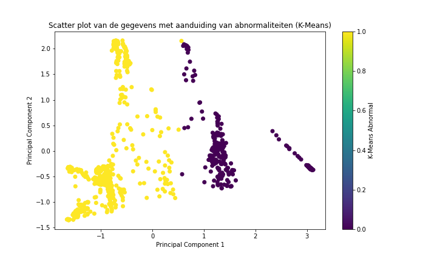

Anomalie Detectie Rapport
Tabel met gegevens
Frame
Keypoint Score
X
Y
Abnormaliteit
{% for index, row in data.iterrows() %}
{{ row['Frame'] }}
{{ row['Keypoint Score'] }}
{{ row['X'] }}
{{ row['Y'] }}
{{ row['Abnormaliteit'] }}
{% endfor %}
Grafiek van Keypoint Scores
Grafiek van X-coördinaten
Grafiek van Y-coördinaten
Scatter plot met aanduiding van abnormaliteiten (K-Means)
